| 1 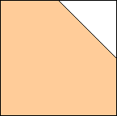 s = 1 | 2 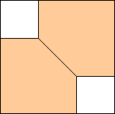 s = 3/2 = 1.5 | 3 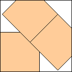 s = 3(1+√2)/4 = 1.810+ | 4 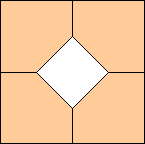 s = 2 |
| 5 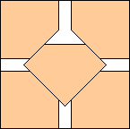 s = (3+√2)/2 = 2.207+ | 6 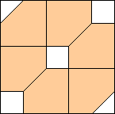 s = 5/2 = 2.5 | 7 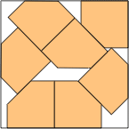 s = 2.700+ (DC after MM) | 8 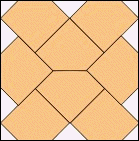 s = 2√2 = 2.828+ (Haym Hirsh) |
| 9 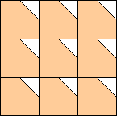 s = 3 | 10 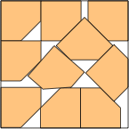 s = 3.174+ (David W. Cantrell) | 11 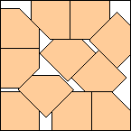 s =(50+21√2)/24= 3.320+ (Maurizio Morandi) | 12 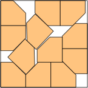 s =(29+√31)/10= 3.456+ (David W. Cantrell) |
| 13 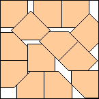 s=(52+19√2)/22=3.585+ (Maurizio Morandi) | 14 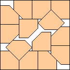 s = 3 + 1/√2 = 3.707+ (Maurizio Morandi) | 15 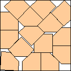 s=(18+9√2)/8 = 3.840+ (Yanis Gomes) | 16 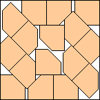 s = (6+7√2)/4 = 3.974+ (Maurizio Morandi) |
| 17 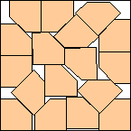 s = 4.067+ (Yanis Gomes) | 18 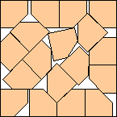 s = (18+11√2)/8 = 4.194+ (Yanis Gomes) | 19 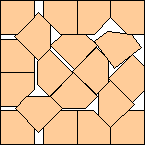 s = 4.289+ (Yanis Gomes) | 20 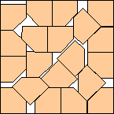 s = 4.389+ (Yanis Gomes) |
| 21 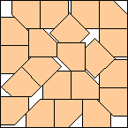 s = (38+5√2)/10 = 4.507+ (Yanis Gomes) | 22 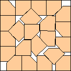 s = 4.606+ (Yanis Gomes) | 23 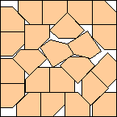 s = 4.733+ (Yanis Gomes) | 24 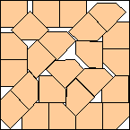 s = 4.810+ (Yanis Gomes) |
| 25 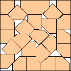 s = (47+12√2)/13 = 4.920+ (Yanis Gomes) | 26 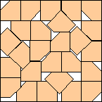 s = (23+5√2)/6 = 5.011+ (Yanis Gomes) | 27 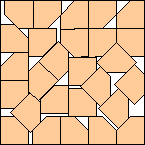 s = 5.128+ (Yanis Gomes) | 28 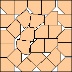 s = 5.206+ (Yanis Gomes) |
| 29 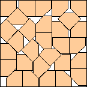 s = 5.285+ (Yanis Gomes) | 30 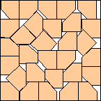 s = 5.373+ (Yanis Gomes) | 31 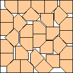 s = (50+11√2)/12 = 5.463+ (Yanis Gomes) | 32 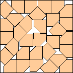 s = 5.648+ (Yanis Gomes) |
| 33 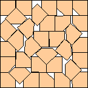 s = 5.765+ (Yanis Gomes) | 34 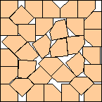 s = 5.373+ (Yanis Gomes) | 35 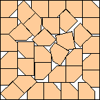 s = 5.841+ (Yanis Gomes) | 36 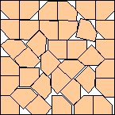 s = 5.912+ (Yanis Gomes) |
| 37 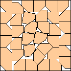 s = 6.003+ (Yanis Gomes) | 38 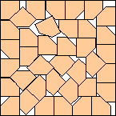 s = 6.075+ (Yanis Gomes) | 39 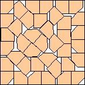 s = 6.133+ (Yanis Gomes) | 40 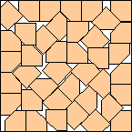 s = 6.221+ (Yanis Gomes) |
| 41 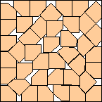 s = 6.286+ (Yanis Gomes) | 42 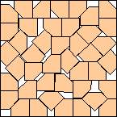 s = 6.403+ (Yanis Gomes) | 43 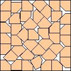 s = 6.477+ (Yanis Gomes) | 44 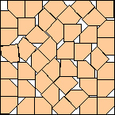 s = 6.536+ (Yanis Gomes) |
| 45 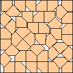 s = 6.583+ (Yanis Gomes) | 46 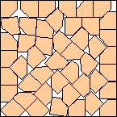 s = 6.710+ (Yanis Gomes) | 47 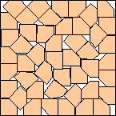 s = 6.750+ (Yanis Gomes) | 48 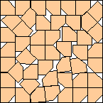 s = 6.856+ (Yanis Gomes) |
| 49 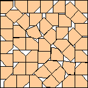 s = 6.938+ (Yanis Gomes) | 50 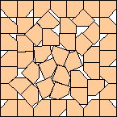 s = 7 (Yanis Gomes) |
| 1 s = 1 | 2 s = 5/3 = 1.666+ | 3 s = 1+2√2/3 = 1.942+ | 4 s = (3+√2)/2 = 2.207+ |
| 5 s = 1 + √2 = 2.414+ (Maurizio Morandi) | 6 s = (5+4√2)/4 = 2.664+ (Yanis Gomes) | 7 s = (3+20√2)/11 = 2.844+ (Yanis Gomes) | 8 s = 3 |
| 9 s = (5+√2)/2 = 3.207+ (Bryce Herdt) | 10 s = (56+13√2)/22 = 3.381+ (Yanis Gomes) | 11 s = (20+41√2)/22 = 3.544+ (Yanis Gomes) | 12 s = 3.701+ (Yanis Gomes) |
| 13 s = (30+14√2)/13 = 3.830+ (Yanis Gomes) | 14 s = 3.982+ (Yanis Gomes) | 15 s = 4.092+ (Yanis Gomes) | 16 s = (21+15√2)/10 = 4.221+ (Yanis Gomes) |
| 17 s = 4.346+ (Yanis Gomes) | 18 s = 4.438+ (Yanis Gomes) | 19 s = (82+267√2)/100 = 4.595+ (Yanis Gomes) | 20 s = 4.708+ (Yanis Gomes) |
| 21 s = 4.830+ (Yanis Gomes) | 22 s = 4.962+ (Yanis Gomes) | 23 s = 5.054+ (Yanis Gomes) | 24 s = 5.173+ (Yanis Gomes) |
| 25 s = (60+21√2)/17 = 5.276+ (Yanis Gomes) | 26 s = 5.346+ (Yanis Gomes) | 27 s = 5.457+ (Yanis Gomes) | 28 s = 5.555+ (Yanis Gomes) |
| 29 s = 5.678+ (Yanis Gomes) | 30 s = 5.750+ (Yanis Gomes) | 31 s = 5.865+ (Yanis Gomes) | 32 s = 5.996+ (Yanis Gomes) |
| 33 s = 6.041+ (Yanis Gomes) | 34 s = 6.125+ (Yanis Gomes) | 35 s = 6.264+ (Yanis Gomes) | 36 s = 6.325+ (Yanis Gomes) |
| 37 s = 6.380+ (Yanis Gomes) | 38 s = 6.494+ (Yanis Gomes) | 39 s = 6.590+ (Yanis Gomes) | 40 s = 6.696+ (Yanis Gomes) |
| 41 s = (375+97√2)/76 = 6.739+ (Yanis Gomes) | 42 s = 6.828+ (Yanis Gomes) | 43 s = 6.931+ (Yanis Gomes) | 44 s = 7.003+ (Yanis Gomes) |
| 45 s = 7.047+ (Yanis Gomes) | 46 s = 7.185+ (Yanis Gomes) | 47 s = 7.221+ (Yanis Gomes) | 48 s = 7.300+ (Yanis Gomes) |
| 49 s = 7.409+ (Yanis Gomes) | 50 s = 7.433+ (Yanis Gomes) |
| 1 s = 4/3 = 1.333+ | 2 s = 2 | 3 s = 2 | 4 s = 8/3 = 2.666+ |
| 5 s = 2 + 2√2/3 = 2.942+ (Maurizio Morandi) | 6 s = 3 | 7 s = 4(1+√2)/3 = 3.218+ | 8 s = 10/3 = 3.333+ |
| 9 s = 3.750+ (Yanis Gomes) | 10 s = 2+4√2/3 = 3.885+ (Maurizio Morandi) | 11 s = 4 | 12 s = 4 |
| 13 s = 4 | 14 s = 3 + √2 = 4.414+ | 15 s = 14/3 = 4.666+ (David W. Cantrell) | 16 s = 2 + 2√2 = 4.828+ (David W. Cantrell) |
| 1 s = 1 | 2 s = √2 = 1.414+ | 3 s = 1 + 1/√2 = 1.707+ | 4 s = 1.989+ (Yanis Gomes) |
| 5 s = 3√2/2 = 2.121+ | 6 s = 2 + √2/4 = 2.353+ (David W. Cantrell) | 7 s = 1+11√2/10 = 2.555+ (Maurizio Morandi) | 8 s = 2 + 1/√2 = 2.707+ (Maurizio Morandi) |
| 9 s = 2√2 = 2.828+ (Maurizio Morandi) | 10 s =(2+7√2)/4= 2.974+ (Maurizio Morandi) | 11 s = 1 + 3/√2 = 3.121+ (Maurizio Morandi) | 12 s =(6+5√2)/4= 3.267+ (Maurizio Morandi) |
| 13 s = 3.395+ (Yanis Gomes) | 14 s = (9+6√2)/5 = 3.497+ (Yanis Gomes) | 15 s=(50+47√2)/32=3.639+ (Yanis Gomes) | 16 s = 3.742+ (Yanis Gomes) |
| 1 s = 1 | 2 s = 1.873+ (Maurizio Morandi) | 3 s = 5/4 + 1/√2 = 1.957+ (Maurizio Morandi) | 4 s = 2(2+√2)/3 = 2.276+ |
| 5 s = 5/2 = 2.5 (Maurizio Morandi) | 6 s = 2 + 1/√2 = 2.707+ (Maurizio Morandi) | 7 s=(32+19√2)/20=2.943+ (Maurizio Morandi) | 8 s=(25+13√2)/14=3.098+ (Maurizio Morandi) |
| 9 s = 4(1+√2)/3 = 3.218+ (Maurizio Morandi) | 10 s=(20+15√2)/12=3.434+ (Yanis Gomes) | 11 s=(22+15√2)/12=3.601+ (Yanis Gomes) | 12 s=(92+83√2)/56=3.738+ (Yanis Gomes) |
| 13 s = 3.901+ (Yanis Gomes) | 14 s=(14+47√2)/20=4.023+ (Yanis Gomes) | 15 s=(53+45√2)/28=4.165+ (Yanis Gomes) | 16 s=(45+41√2)/24=4.290+ (Yanis Gomes) |
| 17 s=(98+90√2)/51=4.417+ (Yanis Gomes) | 18 s=(136+127√2)/70=4.508+ (Yanis Gomes) | 19 s=(45+47√2)/24=4.644+ (Yanis Gomes) | 20 s = 4.767+ (Yanis Gomes) |
| 21 s = 4.863+ (Yanis Gomes) | 22 s = 4.989+ (Yanis Gomes) | 23 s=(775+277√2)/228=5.117+ (Yanis Gomes) | 24 s=(73+22√2)/20=5.205+ (Yanis Gomes) |
| 25 s = 5.306+ (Yanis Gomes) | 26 s = 5.409+ (Yanis Gomes) | 27 s = 5.499+ (Yanis Gomes) | 28 s = 5.603+ (Yanis Gomes) |
| 29 s = 5.723+ (Yanis Gomes) | 30 s=(113+35√2)/28=5.803+ (Yanis Gomes) | 31 s = 5.872+ (Yanis Gomes) | 32 s=(41+26√2)/13=5.982+ (Yanis Gomes) |
| 33 s = 6.068+ (Yanis Gomes) | 34 s = 6.168+ (Yanis Gomes) | 35 s = 6.257+ (Yanis Gomes) | 36 s = 6.337+ (Yanis Gomes) |
| 37 s = 6.425+ (Yanis Gomes) | 38 s = 6.491+ (Yanis Gomes) | 39 s = 6.574+ (Yanis Gomes) | 40 s = 6.683+ (Yanis Gomes) |
| 41 s = 6.745+ (Yanis Gomes) | 42 s = 6.838+ (Yanis Gomes) | 43 s = 6.901+ (Yanis Gomes) | 44 s=(2082+323√2)/364=6.974+ (Yanis Gomes) |
| 45 s = 7.056+ (Yanis Gomes) | 46 s = 7.146+ (Yanis Gomes) | 47 s = 7.216+ (Yanis Gomes) | 48 s=(1842+367√2)/324=7.287+ (Yanis Gomes) |
| 49 s = 7.351+ (Yanis Gomes) | 50 s = 7.418+ (Yanis Gomes) |
| 1 s = √2 = 1.414+ (Andrew Bayly) | 2 s = 2 | 3 s = 2(2+√2)/3 = 2.276+ | 4 s = 2√2 = 2.828+ |
| 5 s = 3 | 6 s = 1 + 3/√2 = 3.121+ (Maurizio Morandi) | 7 s = 7/2 = 3.5 | 8 s = 1 + 2√2 = 3.828+ (David W. Cantrell) |
| 9 s = 5/2 + √2 = 3.914+ | 10 s = 4 | 11 s = 2 + 3/√2 = 4.121+ | 12 s = 9/2 = 4.5 |
| 13 s = 10√2/3 = 4.714+ | 14 s = 2 + 2√2 = 4.828+ | 15 s = 2 + 2√2 = 4.828+ | 16 s = 5 |
| 1 s = 1 | 2 s = √2 = 1.414+ | 3 s = 2(1+√2)/3 = 1.609+ | 4 s = 5√2/4 = 1.767+ |
| 5 s = √2+√10/5 = 2.046+ (Maurizio Morandi) | 6 s = 3/√2 = 2.121+ | 7 s =(4+7√2)/6= 2.316+ (Maurizio Morandi) | 8 s = 1 + √2 = 2.414+ (David W. Cantrell) |
| 9 s = 11√2/6 = 2.592+ (Maurizio Morandi) | 10 s =1+5√2/4= 2.767+ (Maurizio Morandi) | 11 s = 2√2 = 2.828+ | 12 s = 2√2 = 2.828+ (Maurizio Morandi) |
| 13 s=(6+35√2)/18=3.083+ (David W. Cantrell) | 14 s = (6+7√2)/5 = 3.179+ (Yanis Gomes) | 15 s=(4+53√2)/24=3.289+ (David W. Cantrell) | 16 s = 3.366+ (Yanis Gomes) |
| 1 s = 1 | 2 s = (2+2√2)/3 = 1.609+ | 3 s = 2 | 4 s = (3+√2)/2 = 2.207+ (Maurizio Morandi) |
| 5 s = 2.498+ (Yanis Gomes) | 6 s = 2.742+ (Maurizio Morandi) | 7 s = (9+4√2)/5 = 2.931+ (Maurizio Morandi) | 8 s = 3 (Maurizio Morandi) |
| 9 s = 11/6 + √2 = 3.247+ (Maurizio Morandi) | 10 s = 2 + √2 = 3.414+ (Maurizio Morandi) | 11 s = 4(3+√2)/5 = 3.531+ (Maurizio Morandi) | 12 s=(13+4√2)/5=3.731+ (Yanis Gomes) |
| 13 s = 3.886+ (Yanis Gomes) | 14 s=(33+2√2)/9=3.980+ (Maurizio Morandi) | 15 s = 3+4√2/5 = 4.131+ (Maurizio Morandi) | 16 s=(27+11√2)/10=4.255+ (Yanis Gomes) |
| 1 s = √2 = 1.414+ | 2 s = 2(2+√2)/3 = 2.276+ | 3 s = 2√2 = 2.828+ | 4 s = 2√2 = 2.828+ |
| 5 s = 1 + 3/√2 = 3.121+ | 6 s = 3.665+ (David W. Cantrell) | 7 s = 3.912+ (David W. Cantrell) | 8 s = 2 + 3/√2 = 4.121+ |
| 9 s = 3√2 = 4.242+ | 10 s = 3√2 = 4.242+ | 11 s = 10√2/3 = 4.714+ | 12 s = 2 + 2√2 = 4.828+ |
| 13 s = 11√2/3 = 5.185+ (Maurizio Morandi) | 14 s = 5.385+ (Yanis Gomes) | 15 s = 5.544+ (Yanis Gomes) | 16 s = 4√2 = 5.656+ |
If you can extend any of these results, please e-mail me. Click here to go back to Math Magic. Last updated 8/15/12.